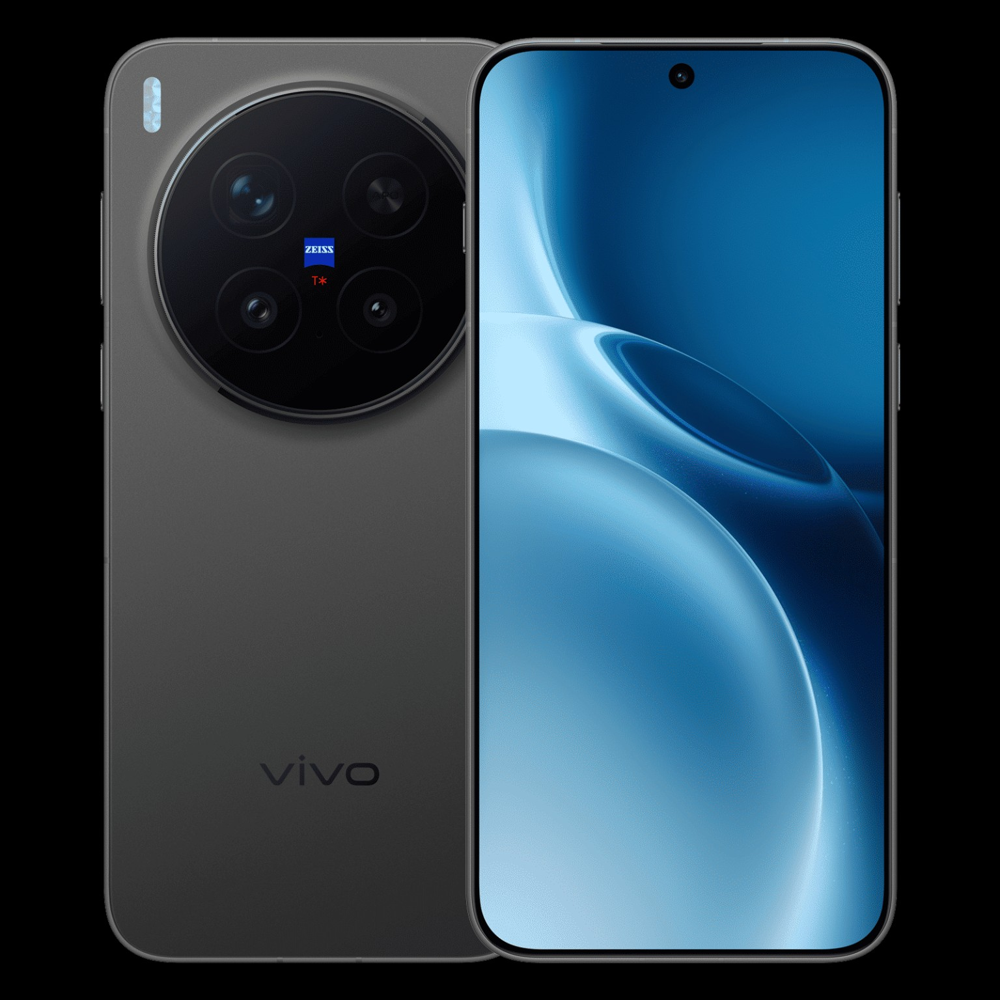
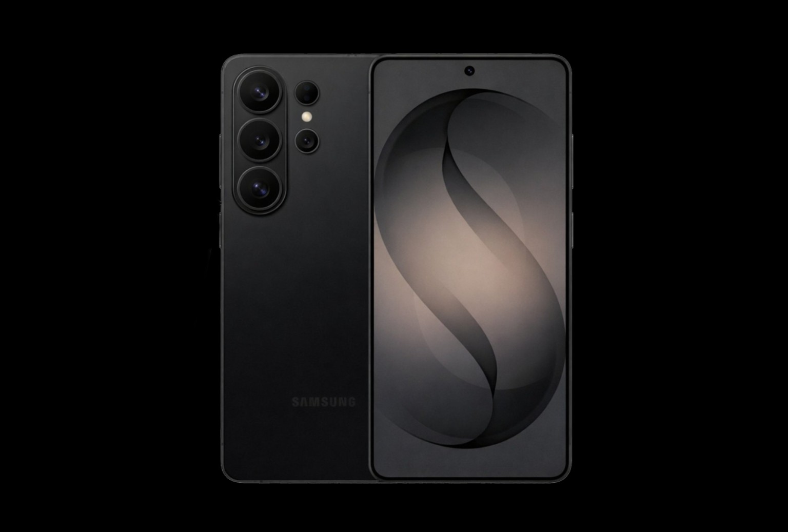
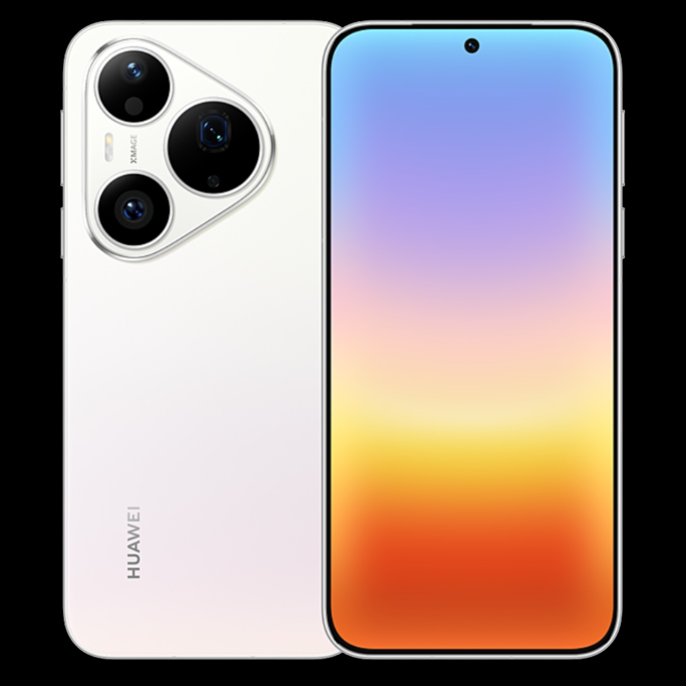

Galeria zdjęć
Przykładowe ujęcia wykonane naszym głównym urządzeniem (Vivo X300 Pro) – portrety, fotografie nocne oraz przykłady zoomu.

Portret

Zdjęcie nocne

Tech & Gadget Channel


JB-Tech to kanał o smartfonach i nowych technologiach. Jego celem są rzetelne testy, porównania i recenzje flagowców. Stronę prowadzą dwoje twórców, a głównym używanym urządzeniem jest Vivo X300 Pro. Na kanale znajdziesz testy aparatów, baterii, wydajności oraz porównania najnowszych telefonów.
Obserwujących
Wyświetleń
Opublikowanych filmów
Testowanych marek
Test aparatu i baterii vivo X300 Pro – prawdziwe użycie w codzienności.
Porównanie superzoomów: Samsung S26 Ultra vs konkurencja.
Fotograficzny test Huawei Pura 80 Ultra – nocne zdjęcia i AI w praktyce.
Przykładowe ujęcia wykonane naszym głównym urządzeniem (Vivo X300 Pro) – portrety, fotografie nocne oraz przykłady zoomu.
Założyciel kanału. Testuje smartfony, tworzy i publikuje filmy.
Produkcja i montaż wideo, planowanie testów, analizy wyników.
Nasze główne smartfony testowe wraz z opisem.
